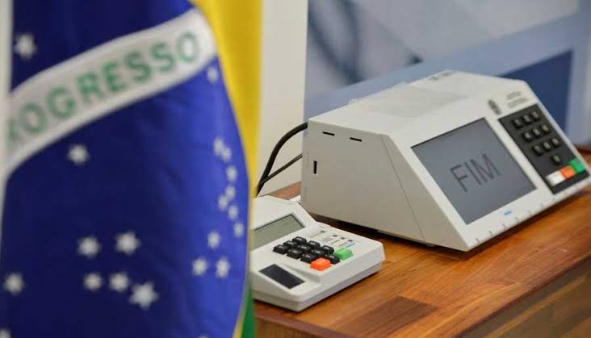

Governo troca as urnas e unifica os horarios de votação
Segundo o (STE) as urnas nao podem ser burladas ou afetar o resultado , ainda nesta eleiçao as urnas serão trocadas , afirma o governo.
Tambem terá atendimentos especializados para deficientes de modo geral com uma urna apenas para essas pessoas, para favorecer fazendo com que elas nao peguem fila, essa proposta ainda esta sendo analisada pelo ministerio.
Obrigado pela sua atenção e tenha um bom voto
Governo afirma que o governo irá trocar as urnas para urnas mais modernas ,
O governo afirma tambem que ira criar uma votação especial para deficientes que tem problemas de locomoção ou de modo geral , governo afirma que essas novidades serão aprovadas até a epoca das eleições para um bom voto .